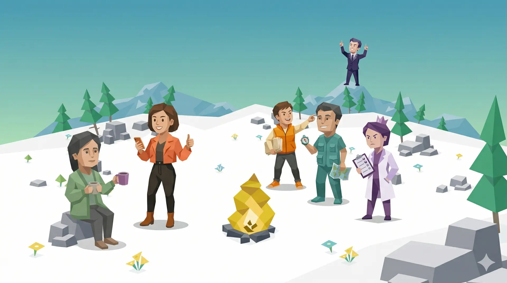

ScanSci 出品
ACTI
开始测试
我的结果
所有类型
应用导航
EasySlides
PaperDeck
Paper Atlas
DataRaven
Journal Scout
Citation Lab
SCI Skills
ACTI
Academic Character Type Indicator
ACTI
你不一定是你以为的那种学者
32
道题 · 4 个维度 · 16 种学术人格
开始测试 →
4
大维度
16
种人格
32
道题目
6
min
完成时间

第 1 题 / 共 32 题
← 上一题
下一题 →
人格图鉴
所有 16 种学术人格
点击任意类型，查看完整详情页
全部
卷学派·理性系
卷学派·感性系
躺学派·理性系
躺学派·感性系